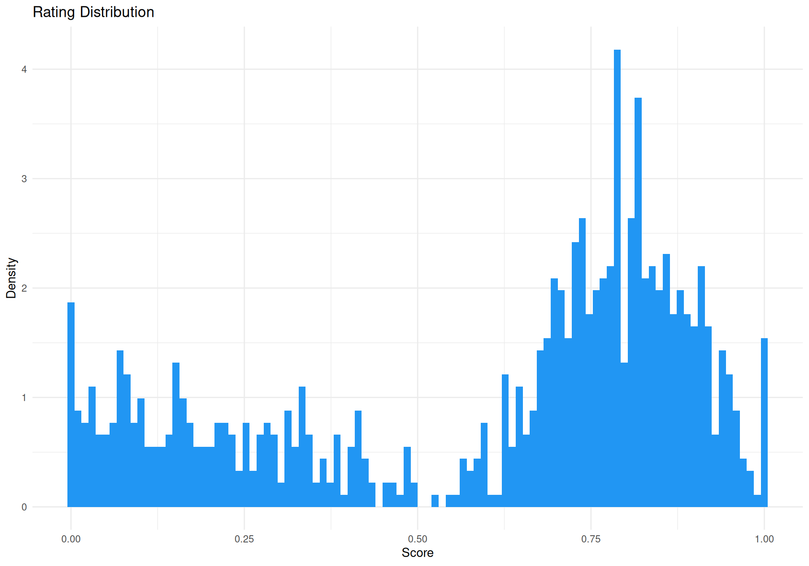

Simulate Data
df <- data.frame()
for(x in seq(0.1, 0.9, by = 0.1)) {
score <- rchoco(n = 100, p = 0.4 + x / 2, confright = 0.4 + x / 3,
confleft = 1-x, pex = 0.03, bex = 0.6, pmid = 0)
df <- rbind(df, data.frame(x = x, score = score))
}
df |>
ggplot(aes(x = score, y = after_stat(density))) +
geom_histogram(bins = 100, fill = "#2196F3") +
labs(title = "Rating Distribution", x = "Score", y = "Density") +
theme_minimal()
Models
ZOIB Model
The Zero-One Inflated Beta (ZOIB) model assumes that the data can be modeled as a mixture of two logistic regression processes for the boundary values (0 and 1) and a beta regression process for the continuous proportions in-between.
f <- bf(
score ~ x,
phi ~ x,
zoi ~ x,
coi ~ x,
family = zero_one_inflated_beta()
)
m_zoib <- brm(f,
data = df, family = zero_one_inflated_beta(), init = 0,
chains = 4, iter = 500, backend = "cmdstanr"
)
m_zoib <- brms::add_criterion(m_zoib, "loo") # For later model comparison
saveRDS(m_zoib, file = "models/m_zoib.rds")XBX Model
Kosmidis & Zeileis (2024) introduce a generalization of the classic beta regression model with extended support [0, 1]. Specifically, the extended-support beta distribution (xbeta) leverages an underlying symmetric four-parameter beta distribution with exceedence parameter nu to obtain support [-nu, 1 + nu] that is subsequently censored to [0, 1] in order to obtain point masses at the boundary values 0 and 1.
f <- bf(
score ~ x,
phi ~ x,
kappa ~ x,
family = xbeta()
)
m_xbx <- brm(f,
data = df, family = xbeta(), init = 0,
chains = 4, iter = 500, backend = "cmdstanr"
)
m_xbx <- brms::add_criterion(m_xbx, "loo") # For later model comparison
saveRDS(m_xbx, file = "models/m_xbx.rds")Beta-Gate Model
The Beta-Gate model corresponds to a reparametrized Ordered Beta model (Kubinec, 2023). In this model, observed 0s and 1s represent instances where the underlying continuous response tendency fell beyond lower or upper boundary points (‘gates’).
f <- bf(
score ~ x,
phi ~ x,
pex ~ x,
bex ~ x,
family = betagate()
)
m_betagate <- brm(f,
data = df, family = betagate(), stanvars = betagate_stanvars(), init = 0,
chains = 4, iter = 500, backend = "cmdstanr"
)
m_betagate <- brms::add_criterion(m_betagate, "loo") # For later model comparison
saveRDS(m_betagate, file = "models/m_betagate.rds")CHOCO Model
See the documentation of the Choice-Confidence (CHOCO).
f <- bf(
score ~ x,
confright ~ x,
confleft ~ x,
precright ~ x,
precleft ~ x,
pex ~ x,
bex ~ x,
pmid = 0,
family = choco()
)
m_choco <- brm(f,
data = df, family = choco(), stanvars = choco_stanvars(), init = 0,
chains = 4, iter = 500, backend = "cmdstanr"
)
m_choco <- brms::add_criterion(m_choco, "loo") # For later model comparison
saveRDS(m_choco, file = "models/m_choco.rds")